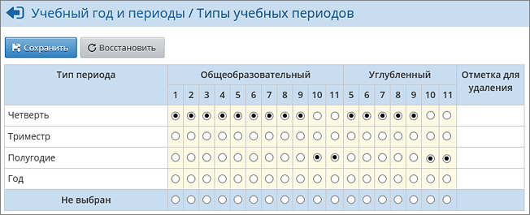

Перед началом работы с индивидуальным учебным планом необходимо проверить правильность соответствия параллелей и учебных периодов.
Для этого надо перейти в раздел Планирование -> Учебный год и периоды. Нажав кнопку Типы учебных периодов, перейдите на соответствующий экран:

В шапке таблицы указаны профили (кроме общеобразовательного, могут использоваться и другие профили).
Внимательно проверьте каждый столбец: переключатель должен правильно указывать в нём тип периода. Внимание! Изменить тип учебного периода после того, как начнётся выставление итоговых отметок, будет НЕВОЗМОЖНО!
В данном примере, мы установим для 10 и 11 параллелей тип периода «Полугодие», для остальных параллелей – четверти. Проверив расстановку переключателей, нажмите кнопку Сохранить.
Смена типа периода для класса с ИУП, в котором уже созданы предмето-группы
Если класс занимается по ИУП и уже имеет предмето-группы, то менять тип учебного периода у такого класса нужно очень внимательно!
При изменении типа периода для класса не изменяется тип периода для предмето-групп в этом классе!
Допустим, что для того профиля, к которому относится класс, заполнен ИУП по четвертям (соответственно, созданы ПГ по четвертям, учащиеся зачислены в ПГ также по четвертям). Если изменить тип периода для профиля, к которому относится класс, на полугодие, то будут удалены связи для класса и учащихся с четвертями и выставлены новые связи для класса и учащихся с полугодиями. При этом сами ПГ останутся связаны с четвертями, по следующим причинам:
1) в ПГ могут заниматься учащиеся из разных классов, разных профилей;
2) в ИУП могут быть не проставлены соответствующие часы по полугодиям.
Как следствие, в учебных разделах системы (классный журнал, отчёты и т.п.) при выборе данного класса, затем предметов в нём - система сообщит, что в ПГ нет учащихся.
Поэтому необходимо определить правильные типы периодов до того, как начинается формирование ИУП.